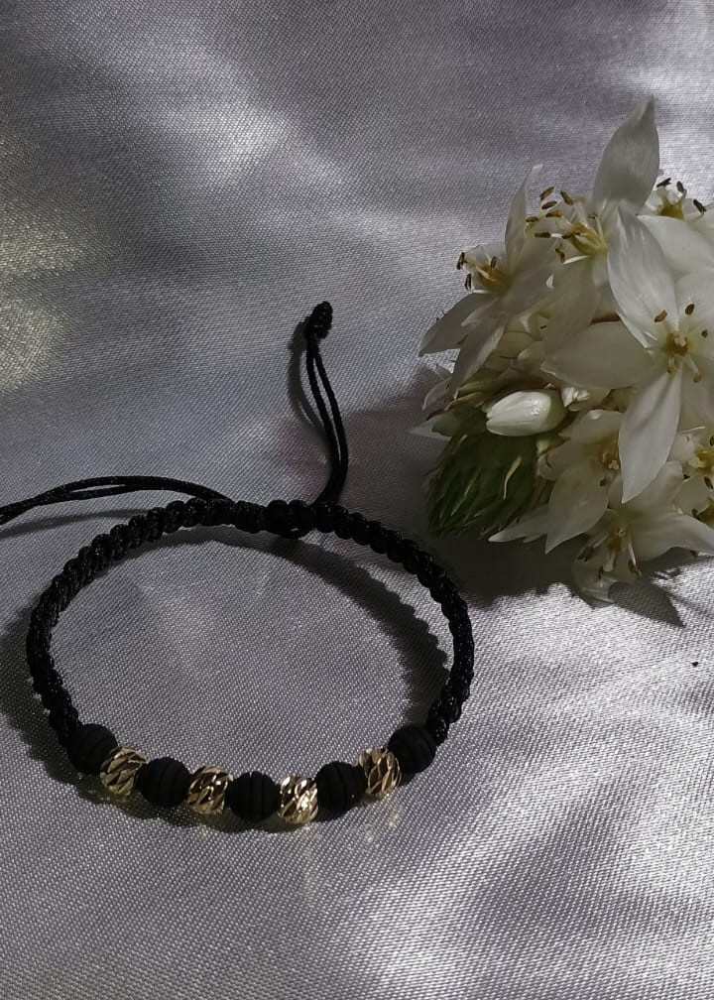

El Rodio es un metal de transición blanco plateado. Tiene la distinción de ser el metal PRECIOSO más caro del mundo.
Parte del atractivo del rodio viene de su alta REFLECTANCIA, casi única entre los metales.
¿Qué es el baño de Rodio?
Este metal es usado para recubrir con una capa decorativa y protectora de rodio. El rodio, confiere un acabado extremadamente brillante
y resistente cuando se aplica como revestimiento.
Proporciona un acabado duradero de brillo excepcional. Los baños de rodio pueden mejorar en gran medida la apariencia y longevidad de cualquier metal al que se le aplica.
Productos
Juego de cadena, pulsera y aretes.
Precio: 38.000 COP
Candona Rodio tornida mediana.
Precio: 22.000 COP

Pulsera en rodio y pepas de neupre.
Precio: 15.000 COP
Cadena de Rodio turbillon y deje de cruz delgada.
Precio: 25.000 COP
Topo Rodio Virgen de Guadalupe circones verdes.
Precio: 17.000 COP
Anillo de Rodio, 3 mariposas, ajustable.
Precio: 18.000 COP
Cadena de Rodio de graduar, aguja y dije de corazón topido de circones.
Precio: 25.000 COP
Pulso de Rodio, ensamble de balín pequeño.
Precio: 18.000 COP
Pulso de Rodio tejido balin y dijes de corazón.
Precio: 18.000 COP
Variedades de cadenas de Rodio.
Precio: 20.000 COP
Trío de topos en cruz dorado.
Precio: 28.000 COP
Pulsos tejidos y Variedades de dijes en Rodio y balines.